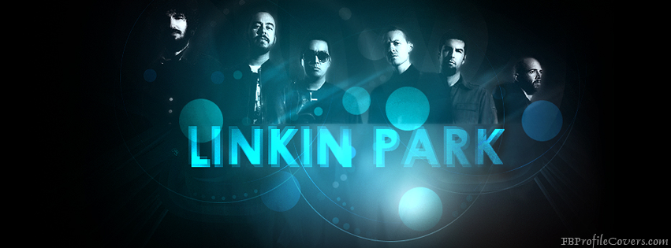

Linkin Park
Linkin Park es una banda estadounidense de rock alternativo procedente de Agoura Hills, California.
Formada en 1996, el grupo estuvo inicialmente integrado por:
Mike Shinoda
Dave Farrell
Joe Hahn
Brad Delson
Rob Bourdon
Mark Wakefield
Chester Bennington este último como voz principal.
La banda inició en ese mismo año sus primeros trabajos musicales de manera independiente y posterior a esto grabaron su primer material llamado Xero; sin embargo no tuvieron gran éxito en la búsqueda de un sello discográfico ya que nadie mostró interés por su trabajo, lo que ocasionó la renuncia de Mark Wakefield. Poco después, Chester Bennington se incorporó a la banda como vocalista; el grupo realizó su primera presentación en un club de Los Ángeles y siendo respaldados por Jeff Blue, en aquel entonces vicepresidente de Warner Bros. Records, lograron firmar con el sello en 1999.
El nombre del grupo es un juego de palabras que hace referencia al Lincoln Park en Santa Mónica.
Historia Corta Sobre Linkin park
"Lincoln Park", lugar en el que el grupo se inspiró para el nombre. Este es un nombre antiguo.
Fundada originalmente por tres compañeros de escuela, la agrupación inició alrededor de 1996 en Los Ángeles una mezcla de nu metal, hardcore y hip hop.
Después de haberse graduado de la secundaria, los jóvenes californianos Mike Shinoda, Rob Bourdon y Brad Delson tomaron de manera más seria sus intereses musicales, y poco después a la banda se unieron Joe Hahn y Dave Farrell (apodado «Phoenix»).
Ya habiendo cinco integrantes y para completar la formación, alistaron a Mark Wakefield como vocalista principal y aunque limitados financieramente, grabaron su primer material en 1996 en un estudio improvisado propiedad de Mike Shinoda bajo el nombre «Xero».
Sin embargo no lograron obtener un contrato, por consiguiente el proyecto no prosperó, y Wakefield, frustrado, decidió abandonar definitivamente la formación para proseguir con sus estudios.
Debido a que Wakefield declinó el proyecto, Shinoda se vio en la necesidad de contratar un nuevo vocalista, de entre los solicitantes destacó Chester Bennington, un joven originario de Phoenix, Arizona, quien hasta 1998 perteneció a una banda llamada Grey Daze con quienes ya había adquirido experiencia grabando discos desde los 16 años.46 47 Shinoda le hizo llegar algunas canciones interpretadas por el vocalista anterior y versiones instrumentales, para que Chester grabara su voz sobre las últimas, una vez terminado el trabajo, Chester contactó a Shinoda vía telefónica para mostrarle su propia grabación, los integrantes quedaron impresionados por su voz, por lo que decidieron convocarlo a una reunión inmediatamente.48
Tras la integración de Chester, el grupo pasó a llamarse «Hybrid Theory» y trabajando bajo su sello independiente la banda grabó el álbum Hybrid Theory EP.2
Pero debido a problemas legales con un grupo europeo llamado «Hybrid», se vieron forzados a cambiar de nombre nuevamente, Chester sugirió «Lincoln Park» (en honor al parque de Lincoln Park, situado en Chicago), sin embargo debido al dominio «lincolnpark.com» modificaron la ortografía a Linkin Park, su actual nombre.
Temas
Linkin Park se ha caracterizado desde sus inicios por interpretar en sus canciones diversos temas que abarcan diferentes aspectos desde lo personal hasta lo social. En su mayor parte temas líricos que se refieren a los sentimientos, y conflictos sociales. La banda ha hablado acerca de diversas cuestiones, cambiando a lo largo de su discografía. Hybrid Theory y Meteora hablan principalmente acerca de conflictos en las relaciones, desórdenes internos y problemas personales. El álbum Minutes to Midnight es generalmente mucho más «oscuro», tal y como lo indica el nombre del mismo. En primer lugar, aborda el ámbito político: Mike Shinoda se expresa de manera personal sobre la guerra en Irak con la canción «Hands held high», y la canción de cierre, «The Little Things Give You Away», hace referencia al huracán Katrina que golpeó a Nueva Orleans en el año 2005
Del mismo modo, el video musical de la canción «What I've Done» muestra imágenes de Gandhi, Hitler, Mao Tse Tung, Fidel Castro , entre otras personalidades destacadas de la historia, en él se aborda el tema de guerras, motines, las pruebas la destrucción nuclear, medio ambiente y el hambre. «Shadow of the Day» se basa también en los disturbios públicos y la muerte de inocentes, igualmente el tema de la separación es tocado en las canciones «In Pieces» y «Valentine's Day».
Su disco A Thousand Suns trata temas que tienen que ver con la guerra nuclear, «el concepto de este álbum es acerca de una guerra nuclear y en general cualquier tipo de guerra. En esta producción, se mezcla el concepto de las ideas humanas con la tecnología, es decir, los miedos que tienen los humanos con imaginar lo que va a suceder con el mundo en el futuro».150 declaró Mike Shinoda en una entrevista en MTV. El nombre del disco es una referencia a la explosión de una bomba atómica.221 Cabe citar que el grupo destaca por la razón de que hay pocos insultos en sus letras. Sin embargo Minutes To Midnight y A Thousand Suns siguen siendo marcados con la etiqueta de Parental Advisory por palabras que son consideradas como inadecuadas.